|---------|---------|---------|---------|
=========================================
GeoSansRenv
Geo-data and Methods in R:
1: Species 1 Distribution Modelling
The task: run linear models to predict the present day distribution of species 1.
Here, my chosen species 1 is: Myzus persicae, the green peach aphid.

Which set of climatic variables best explains the current distribution of the species?
In order to run linear models to predict the present-day distribution of M. persicae, I had to first understand which climate variables woulbe be important in predicting this distribution. In order to analyse this […].
Presenting a map of its current distribution:
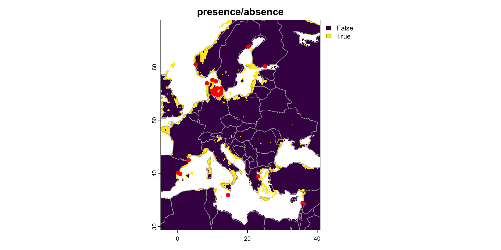
My map of the current M. persicae distribution shows that […].
As such, the set of climatic variables which best explain the current distribution of M. persicae are [… see supplementary]. Perhaps this could be explained by [cite + bibliography], though this would require […].
2: Species 2 Distribution Modelling
The task: run linear models to predict the present day distribution of species 2.
Here, my chosen species 2 is: Prunus persica, the peach tree.

Once again, in order to run linear models to predict the present-day distribution of P. persica, I had to first understand which climate variables would be be important in predicting its distribution. In order to analyse this […].
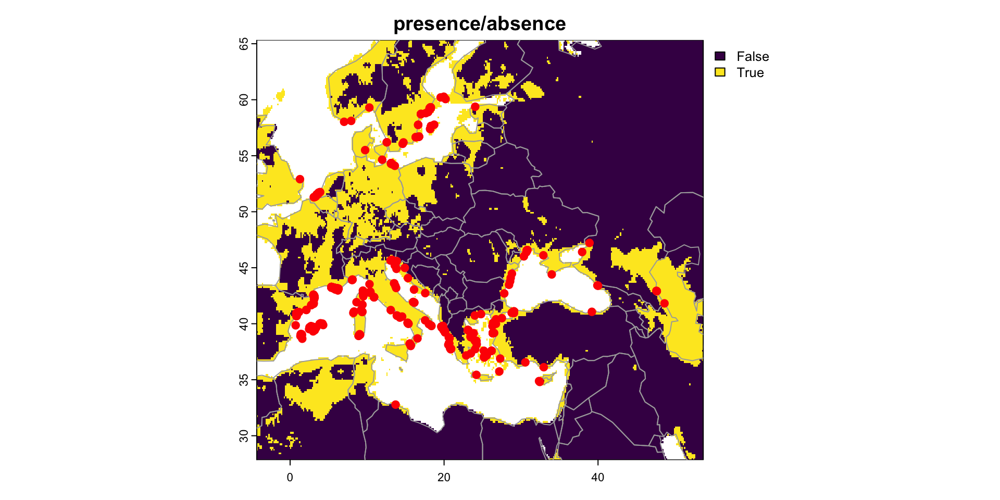
My map of the current M. persicae distribution shows that […].
As such, the set of climatic variables which best explain the current distribution of M. persicae are [… see supplementary]. Perhaps this could be explained by [cite + bibliography], though this would require […].
3: Distribution Overlap
The task: plot the overlap in distribution of the two species. Devise and calculate a metric for the degree of overlap between their ranges, explaining how you calculated it.
Plot the overlap in distribution of the two species.
In order to plot the overlap in distribution between M. persicae and P. persica, I first needed to […].
An individual M. persicae can disperse up to 80km!
Devise and calculate a metric for the degree of overlap between their ranges, explaining how you calculated it.
In order to devise and calculate a metric for the degree of overlap between the ranges of M. persicae and P. persica, I decided to […].
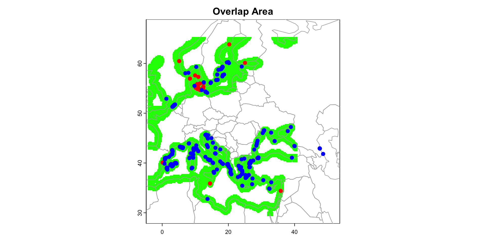
[1] "Total overlap area (sum of raster cells): 22882"Ultimately, my map of the overlapping distributions of M. persicae and P. persica shows that […].
4: Interspecies Distribution Dependence
The task: use a linear model to test whether the distribution of species 1 at the present time depends on the distribution of species 2, while also taking account of the effects of climatic variables.
In order to generate a linear model that could test whether the distribution of M. persicae at the present time depends on the distribution of P. persica, I first had to […].
Call:
lm(formula = pg2_values ~ pg1_values, data = present_overlap_model_data)
Residuals:
Min 1Q Median 3Q Max
-1.05753 -0.11510 -0.10382 0.00413 0.88361
Coefficients:
Estimate Std. Error t value Pr(>|t|)
(Intercept) 0.115308 0.001153 100.0 <2e-16 ***
pg1_values 1.019364 0.005853 174.2 <2e-16 ***
---
Signif. codes: 0 '***' 0.001 '**' 0.01 '*' 0.05 '.' 0.1 ' ' 1
Residual standard error: 0.2254 on 41826 degrees of freedom
(23110 observations deleted due to missingness)
Multiple R-squared: 0.4203, Adjusted R-squared: 0.4203
F-statistic: 3.033e+04 on 1 and 41826 DF, p-value: < 2.2e-16Ultimately, this summary of my model shows that […].
5: Future Distribution Prediction
The task: predict the future distribution of each species using CMIP6 data for future climate and predict how the degree of overlap in ranges change will change in that time. Do you expect the two species to co-occur more often or less often than at the present?
Predict the future distribution of each species using CMIP6 data for future climate:
In order to predict the future distribution of each species using the CMIp6 data for future climate, I first had to […].
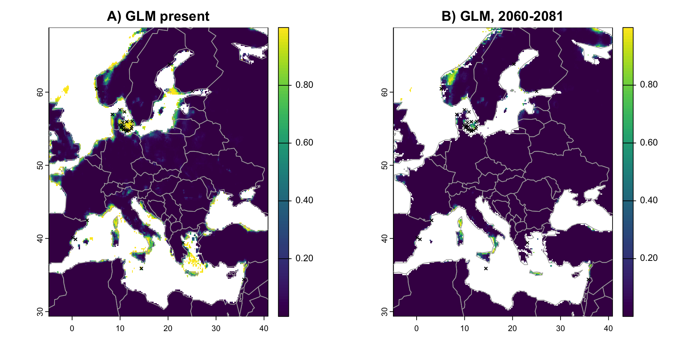
[1] "Range change metrics:"[1] "Current suitable localities: NA"[1] "Future suitable localities: 6"[1] "Number of new suitable localities (expansion): 0"[1] "Number of lost suitable localities (contraction): 6"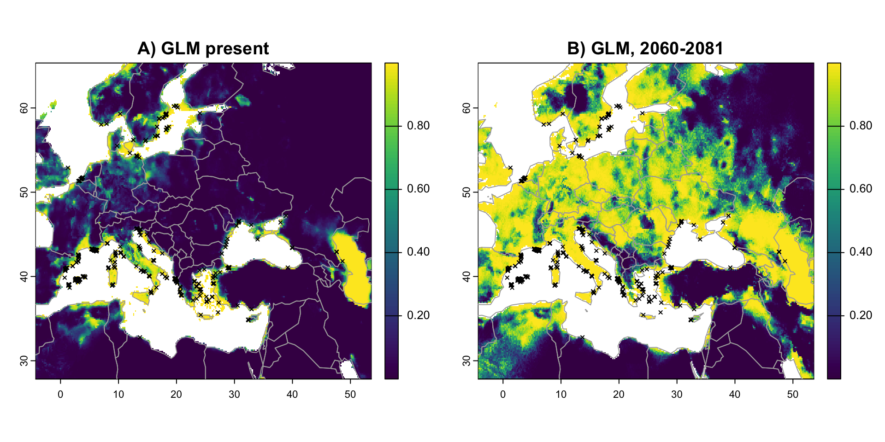
[1] "Range change metrics:"[1] "Current suitable localities: NA"[1] "Future suitable localities: 166"[1] "Number of new suitable localities (expansion): 0"[1] "Number of lost suitable localities (contraction): 0"Predict how the degree of overlap in ranges change:
In order to predict how the degree of overlap in the ranges of M. persicae and P. persica would change in this time, I had to […].
Do you expect the two species to co-occur more often or less often than at the present?
[1] "Total overlap area (sum of raster cells): 23031"Ultimately, my calculation for the overlapping area sum in the future shows that […].
SUPPLEMENTARY.

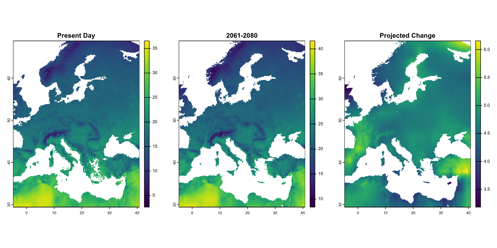
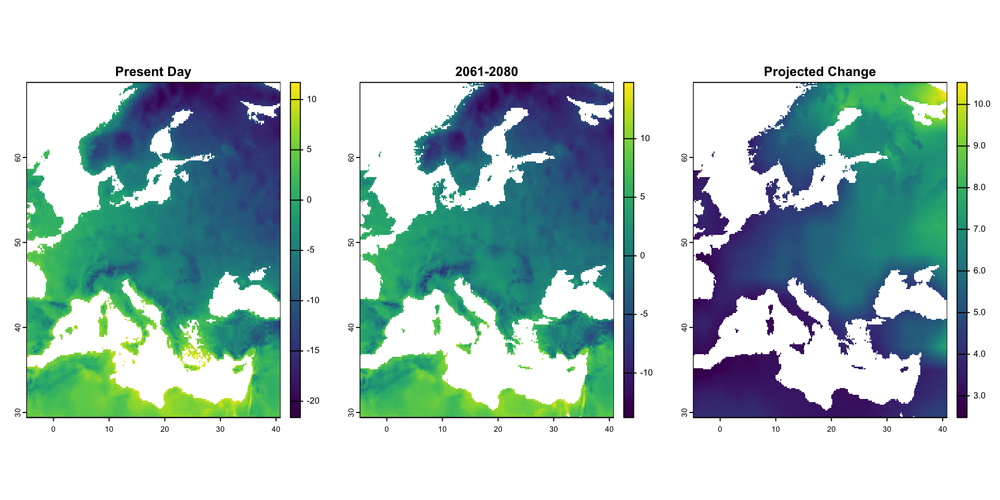
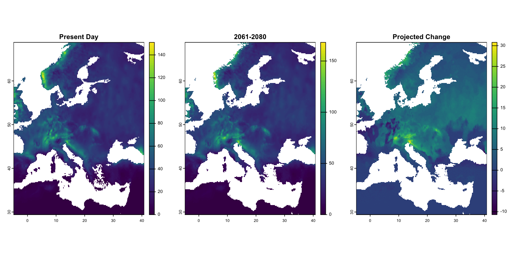
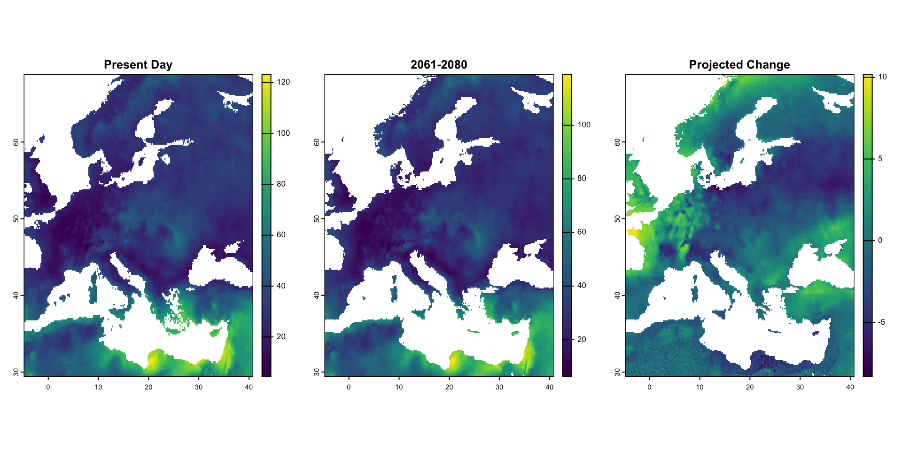
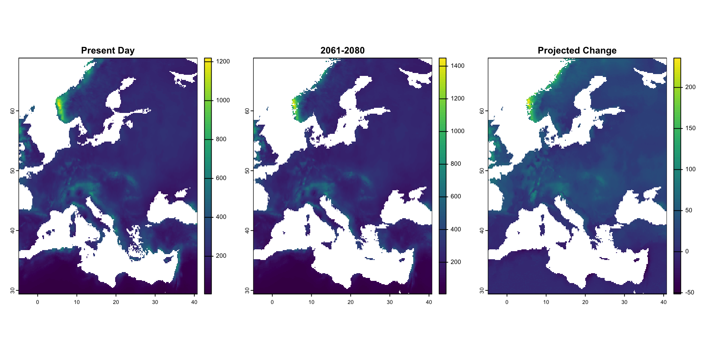
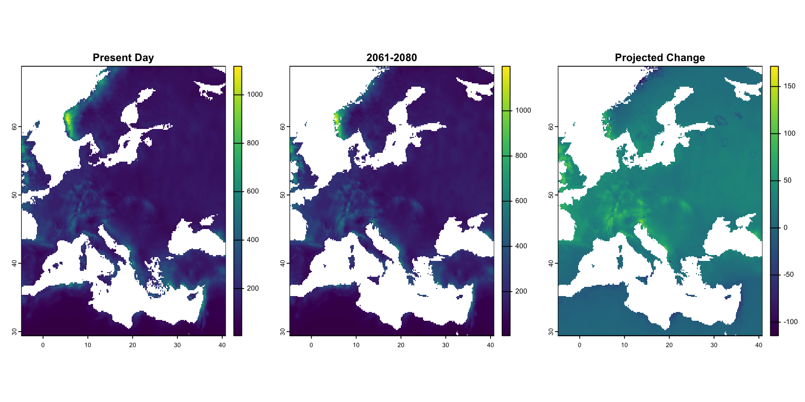
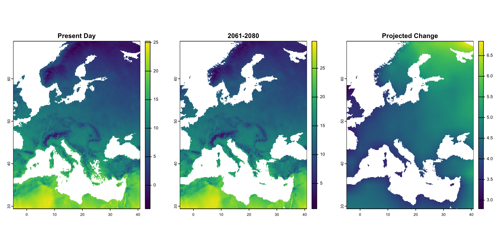
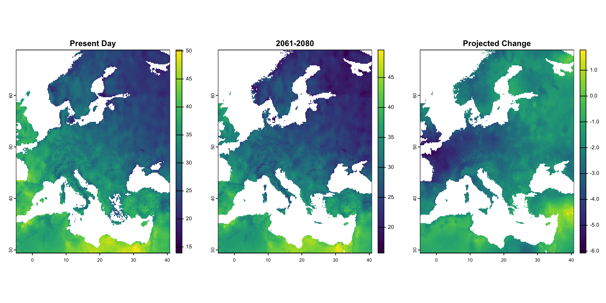
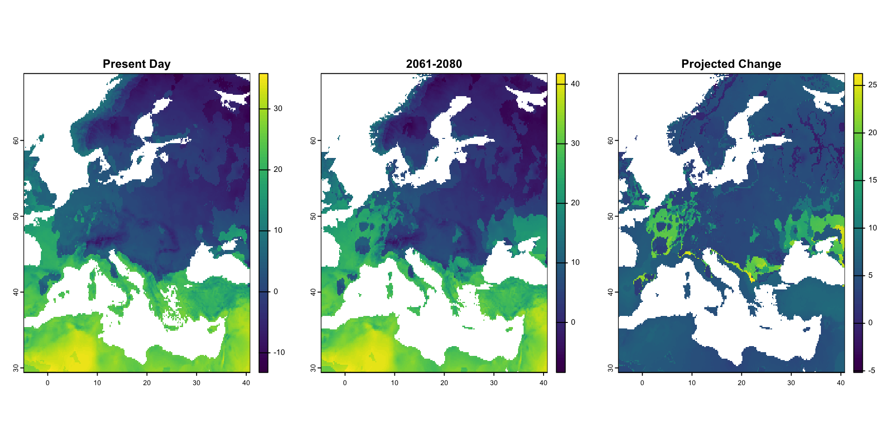


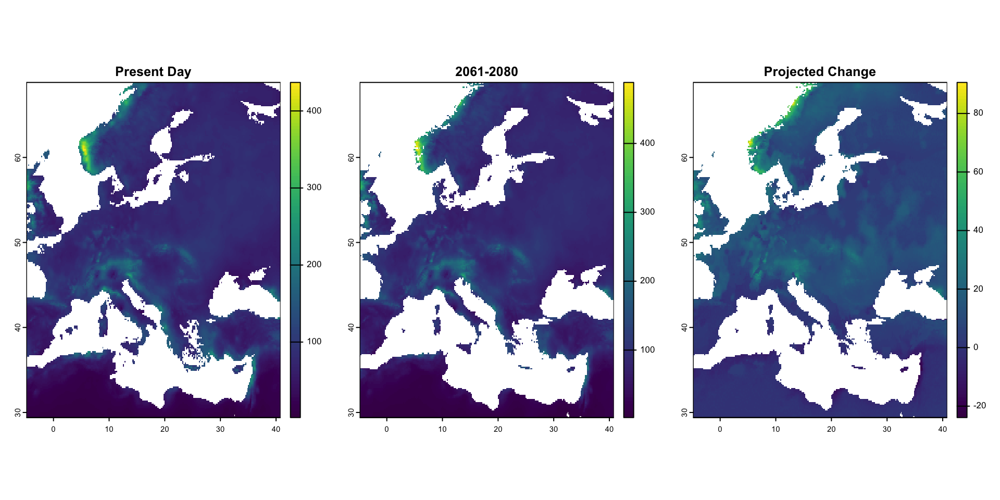